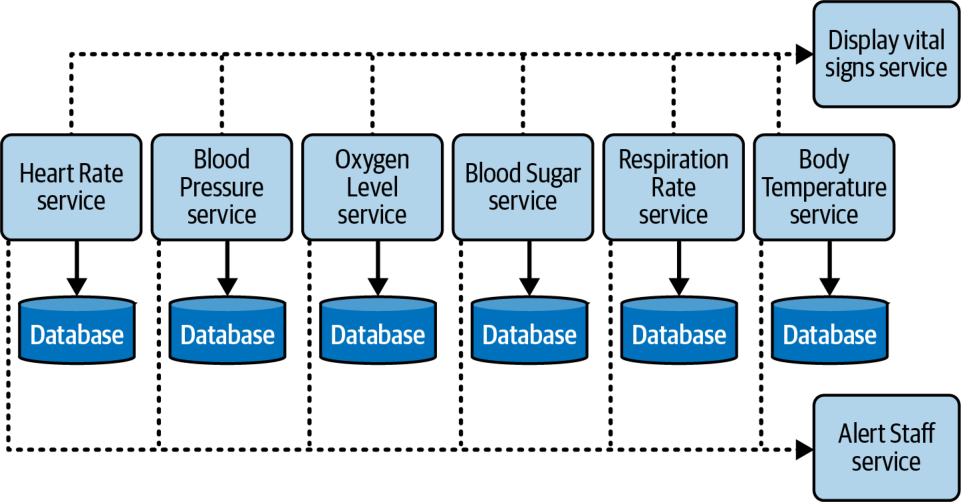

سبک معماری میکروسرویسها در مقیاس رتبهبندیِ استاندارد ما، که در شکل ۱۸-۱۶ نشان داده شده، چندین رتبهٔ حدی دارد. رتبهٔ یکستاره یعنی آن ویژگی معماریِ مشخص در این معماری بهخوبی پشتیبانی نمیشود، در حالی که رتبهٔ پنجستاره یعنی آن ویژگی معماری یکی از قویترین جنبههای این سبک است. تعریفِ ویژگیهایی که در این کارنامه آمدهاند در فصل ۴ یافت میشود.
سبک میکروسرویسها از شیوههای مهندسیِ مدرن (modern engineering practices) مانند استقرار خودکار (automated deployment) و آزمونپذیری (testability) پشتیبانیِ چشمگیری میکند. میکروسرویسها بدون انقلاب DevOps و حرکت بیوقفهاش به سوی خودکارسازیِ دغدغههای عملیاتی نمیتوانست وجود داشته باشد.
شکل ۱۸-۱۶. رتبهبندیِ ویژگیهای میکروسرویسها
ماهیت مستقل، تکمنظوره و در نتیجه ریزدانهٔ سرویسها در این سبک معماری معمولاً به تحمل خطای بالا میانجامد؛ رتبهٔ بالای این ویژگی نیز از همینجاست.
دیگر نقاط قوت این معماری، مقیاسپذیری، کشسانی و تکاملپذیری (evolvability) است. برخی از مقیاسپذیرترین سیستمهایی که تاکنون نوشته شدهاند، با موفقیت چشمگیری از میکروسرویسها بهره بردهاند. به همین ترتیب، از آنجا که این سبک بهشدت به خودکارسازی و یکپارچگیِ هوشمند با عملیات متکی است، معماران میتوانند پشتیبانی از کشسانی را در آن بگنجانند. از آنجا که این معماری جداسازیِ بالا را در سطحی تدریجی ترجیح میدهد، از رویهٔ کسبوکاریِ مدرنِ تغییر تکاملی (evolutionary change)، حتی در سطح معماری، نیز پشتیبانی میکند. کسبوکارهای مدرن سریع حرکت میکنند و توسعهٔ نرمافزار برای همگام ماندن با آنها به زحمت افتاده است. معماریای که از واحدهای استقرارِ (deployment units) بسیار کوچک و بهشدت جداشده ساخته شده باشد، میتواند از آهنگ سریعترِ تغییر پشتیبانی کند.
کارایی اغلب در میکروسرویسها مشکلساز است. معماریهای توزیعشده برای انجام کار باید فراخوانیهای شبکهایِ زیادی انجام دهند و این کار سربار کاراییِ بالایی دارد. آنها همچنین باید برای تأیید هویت و دسترسی در هر نقطهٔ پایانی، بررسیهای امنیتی (security checks) را فراخوانی کنند که تأخیر بیشتری به همراه دارد. میکروسرویسها از تأخیر داده (data latency) نیز رنج میبرد: وقتی درخواستی به هماهنگیِ چند سرویس نیاز دارد، به معنای چند فراخوانیِ پایگاهداده است.
به همین دلیل، دنیای میکروسرویسها الگوهای معماریِ فراوانی برای افزایش کارایی دارد؛ از جمله کشگذاری و تکثیر هوشمندانهٔ داده برای جلوگیری از فراخوانیهای شبکهایِ بیش از حد. کارایی دلیل دیگری است که میکروسرویسها اغلب کرئوگرافی را بر ارکستراسیون ترجیح میدهند: کوپلینگ کمتر امکان ارتباط سریعتر و گلوگاههای (bottlenecks) کمتری را فراهم میکند.
سبک میکروسرویسها قاطعانه یک معماری با افراز حوزهای است که در آن مرز هر سرویس باید با حوزهها متناظر باشد. به لطف زمینهٔ محدود، این سبک متمایزترین کوانتومها (quanta) را در میان همهٔ معماریهای مدرن دارد؛ از بسیاری جهات، نمونهٔ اعلای همان چیزی است که سنجهٔ کوانتوم ارزیابی میکند. فلسفهٔ پیشرانِ جداسازیِ حداکثری دردسرهایی پدید میآورد، اما وقتی بهدرستی اجرا شود، مزایای فوقالعادهای به بار میآورد. همانند هر معماری دیگری، معماران باید قواعد را بفهمند تا بتوانند هوشمندانه آنها را بشکنند.
نمونهها و موارد کاربرد
سیستمهایی که ماژولاریتیِ کارکردی و دادهایِ بالایی دارند، نامزدهای خوبی برای معماری میکروسرویسها هستند. یک مورد کاربرد خوب که قدرت این سبک را نشان میدهد، سیستم پایش پزشکیای است که علائم حیاتیِ (vital signs) بیمار را پایش میکند: ضربان قلب، فشار خون، سطح اکسیژن و مانند آن. هر علامت حیاتی که سیستم پایش میکند، کارکردی جداگانه و مستقل است که دادههای خودش را مدیریت میکند؛ و این بهخوبی با این سبک معماری و مفهوم زمینهٔ محدود سازگار است.
این سیستم پایش بیمار ورودیها را از دستگاههای پایش بیمار میخواند، علائم حیاتی را ثبت میکند، آنها را از نظر هرگونه مشکل یا ناهمخوانی تحلیل میکند و در صورت یافتن مشکل، به یک متخصص پزشکی هشدار میدهد. هر علامت حیاتی را میتوان با یک میکروسرویس جداگانه بازنمایی کرد که تا حد زیادی از سرویسها و دادههای دیگر مستقل است. با این حال، یک استثنا بر این استقلال وجود دارد: هنگامی که یک علامت حیاتیِ مشخص (مانند ضربان قلب) برای تحلیل خود از نظر هشدارها یا مشکلات، به اطلاعات بیشتری از علامت حیاتیِ دیگری (مانند سرویس پایش خواب) نیاز داشته باشد.
شکل ۱۸-۱۷ نشان میدهد این سیستم چگونه ممکن است با یک معماری میکروسرویس طراحی شود. توجه کنید که هر علامت حیاتی به شکل یک میکروسرویس جداگانه پیادهسازی شده و هر کدام مخزن دادهٔ (data store) خودش را برای خوانشهای علائم حیاتی و دادههای تاریخی نگه میدارد.
کارکرد هشدار، که میان همهٔ سرویسهای علائم حیاتی مشترک است، با یک سرویس مشترک (shared service) به نام Alert Staff بازنمایی شده است. اگر سرویسی مشکلی در یک خوانش ببیند، این سرویس به پرستار یا پزشک هشدار میدهد. هر سرویس آخرین خوانش علائم حیاتی خود را بهصورت ناهمگام به نمایشگری در اتاق بیمار میفرستد که با سرویس مشترک Display Vital Signs بازنمایی شده است.

شکل ۱۸-۱۷. سیستم پایش پزشکیِ بیمار که با معماری میکروسرویسها پیادهسازی شده است
این نمونه برخی از نقاط قوت و مزایای معماری میکروسرویسها را بهروشنی نشان میدهد. تحمل خطا را در نظر بگیرید: اگر یکی از سرویسهای علائم حیاتی از کار بیفتد یا پاسخ ندهد، همهٔ سرویسهای دیگرِ پایش علائم حیاتی کاملاً عملیاتی باقی میمانند. این موضوع بهویژه در پایش پزشکی اهمیت دارد. ابرقدرت دیگر، آزمونپذیری است. اگر توسعهدهندهای روی سرویس پایش فشار خون کار نگهداری انجام دهد، دامنهٔ آزمون آنقدر کوچک است که میتواند مطمئن باشد این علامت حیاتیِ مشخص بهطور کامل آزموده شده و کار نگهداری بر دیگر سرویسهای علائم حیاتی اثری نگذاشته است. سرانجام، نشانهای از تکاملپذیری (یکی دیگر از ابرقدرتهای میکروسرویسها) این است که معمار میتواند بهآسانی پایشگر علامت حیاتیِ دیگری بیفزاید، بیآنکه بر سرویسهای دیگر اثر بگذارد.
در این فصل به بسیاری از جنبههای مهم معماری میکروسرویسها پرداختیم و منابع عالیِ فراوانی برای آموختن بیشتر وجود دارد. برای کاوشی عمیق در میکروسرویسها، منابع زیر را توصیه میکنیم:
Building Microservices، ویراست دوم، نوشتهٔ Sam Newman (O’Reilly، ۲۰۲۱)
Building Micro-Frontends، ویراست دوم، نوشتهٔ Luca Mezzalira (O’Reilly، ۲۰۲۵)
Microservices vs. Service-Oriented Architecture نوشتهٔ Mark Richards (O’Reilly، ۲۰۱۶)
Microservices AntiPatterns and Pitfalls نوشتهٔ Mark Richards (O’Reilly، ۲۰۱۶)